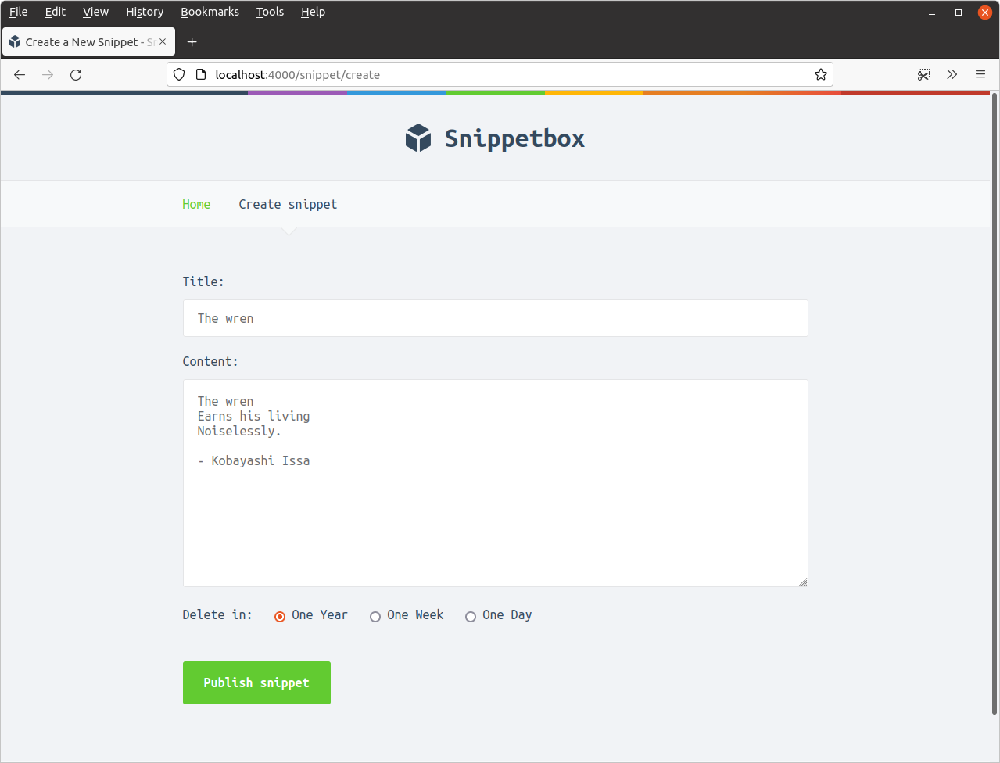
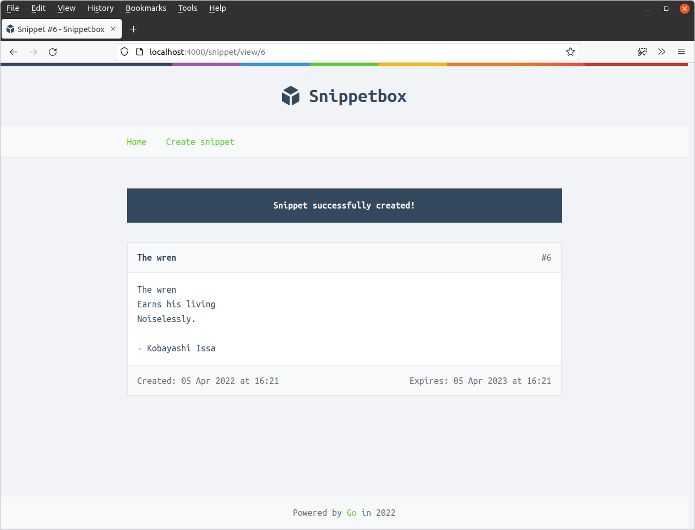
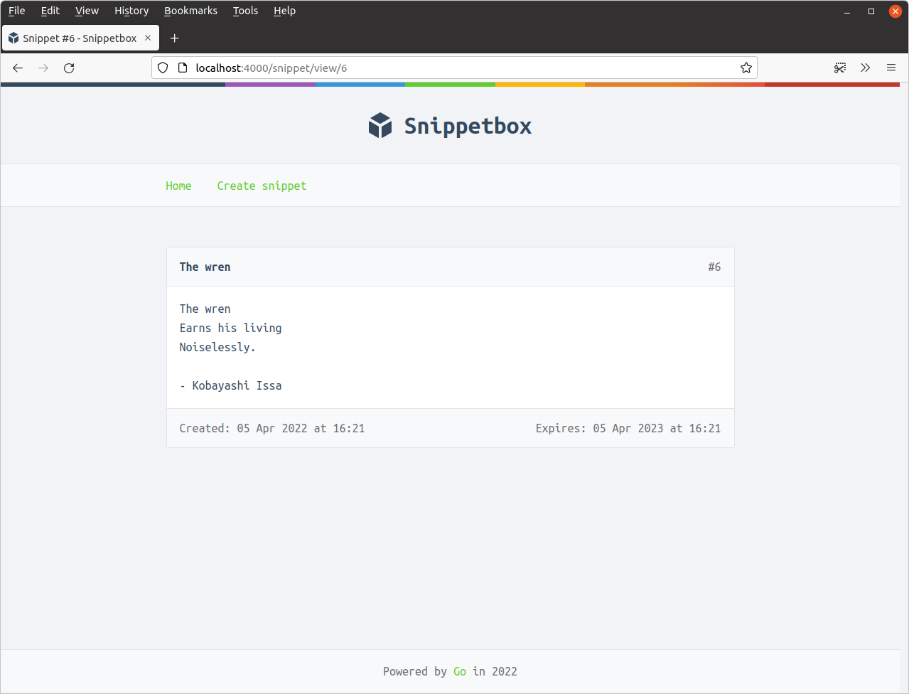
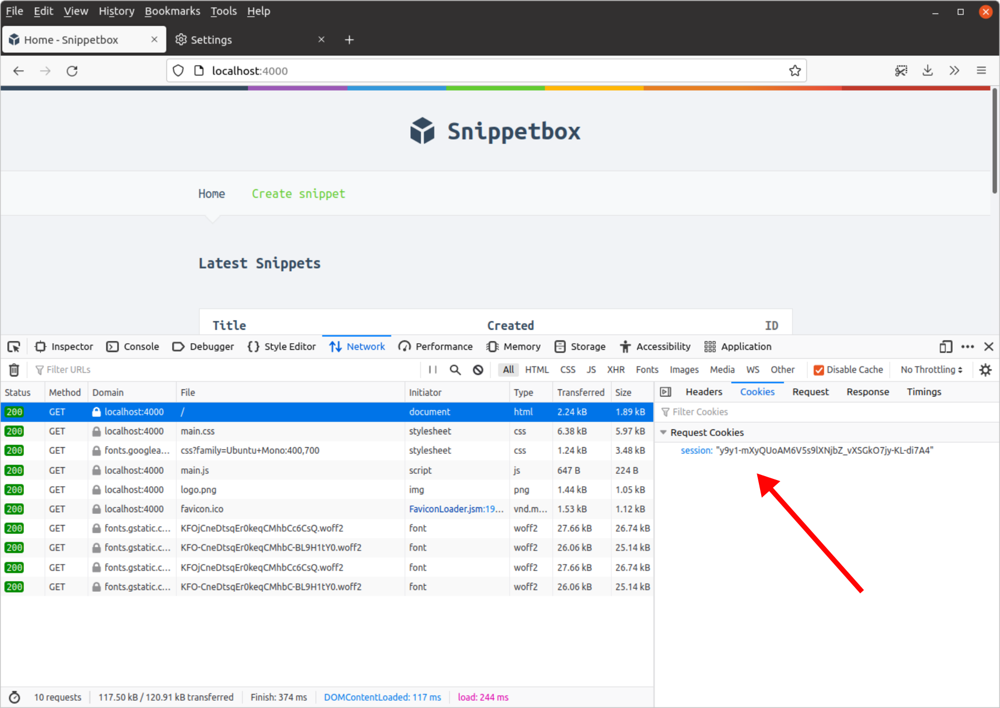

کار با دادههای نشست
در این فصل بیایید عملکرد نشست را به کار ببریم و از آن برای ماندگار کردن پیام فلش تأیید بین درخواستهای HTTP که قبلاً بحث کردیم استفاده کنیم.
در فایل cmd/web/handlers.go خود شروع میکنیم و متد snippetCreatePost خود را بهروزرسانی میکنیم تا یک پیام فلش به دادههای نشست کاربر اضافه شود اگر — و فقط اگر — اسنیپت با موفقیت ایجاد شده باشد. به این صورت:
package main ... func (app *application) snippetCreatePost(w http.ResponseWriter, r *http.Request) { var form snippetCreateForm err := app.decodePostForm(r, &form) if err != nil { app.clientError(w, http.StatusBadRequest) return } form.CheckField(validator.NotBlank(form.Title), "title", "This field cannot be blank") form.CheckField(validator.MaxChars(form.Title, 100), "title", "This field cannot be more than 100 characters long") form.CheckField(validator.NotBlank(form.Content), "content", "This field cannot be blank") form.CheckField(validator.PermittedValue(form.Expires, 1, 7, 365), "expires", "This field must equal 1, 7 or 365") if !form.Valid() { data := app.newTemplateData(r) data.Form = form app.render(w, r, http.StatusUnprocessableEntity, "create.tmpl", data) return } id, err := app.snippets.Insert(form.Title, form.Content, form.Expires) if err != nil { app.serverError(w, r, err) return } // Use the Put() method to add a string value ("Snippet successfully // created!") and the corresponding key ("flash") to the session data. app.sessionManager.Put(r.Context(), "flash", "Snippet successfully created!") http.Redirect(w, r, fmt.Sprintf("/snippet/view/%d", id), http.StatusSeeOther) }
این خوب و ساده است، اما چند نکته برای اشاره وجود دارد:
اولین پارامتری که به
app.sessionManager.Put()میدهیم، context درخواست فعلی است. بعداً در کتاب به درستی درباره اینکه context درخواست چیست و چگونه از آن استفاده کنیم صحبت خواهیم کرد، اما برای الان فقط میتوانید آن را جایی در نظر بگیرید که مدیر نشست به طور موقت اطلاعات را ذخیره میکند در حالی که handlerهای شما با درخواست سروکار دارند.پارامتر دوم (در مورد ما رشته
"flash") کلید برای پیام خاصی است که به دادههای نشست اضافه میکنیم. بعداً پیام را از دادههای نشست با استفاده از این کلید نیز بازیابی خواهیم کرد.اگر نشست موجودی برای کاربر فعلی وجود ندارد (یا نشست آنها منقضی شده است)، یک نشست جدید و خالی برای آنها به طور خودکار توسط میدلور نشست ایجاد خواهد شد.
بعد میخواهیم handler snippetView ما پیام فلش را بازیابی کند (اگر یکی در نشست برای کاربر فعلی وجود داشته باشد) و آن را به قالب HTML برای نمایش بعدی بدهد.
چون میخواهیم پیام فلش را فقط یک بار نمایش دهیم، در واقع میخواهیم پیام را از دادههای نشست بازیابی و حذف کنیم. میتوانیم هر دو این عملیات را همزمان با استفاده از متد PopString() انجام دهیم.
نشان میدهم:
package main ... func (app *application) snippetView(w http.ResponseWriter, r *http.Request) { id, err := strconv.Atoi(r.PathValue("id")) if err != nil || id < 1 { http.NotFound(w, r) return } snippet, err := app.snippets.Get(id) if err != nil { if errors.Is(err, models.ErrNoRecord) { http.NotFound(w, r) } else { app.serverError(w, r, err) } return } // Use the PopString() method to retrieve the value for the "flash" key. // PopString() also deletes the key and value from the session data, so it // acts like a one-time fetch. If there is no matching key in the session // data this will return the empty string. flash := app.sessionManager.PopString(r.Context(), "flash") data := app.newTemplateData(r) data.Snippet = snippet // Pass the flash message to the template. data.Flash = flash app.render(w, r, http.StatusOK, "view.tmpl", data) } ...
اگر الان سعی کنید برنامه را اجرا کنید، کامپایلر (درست) شکایت میکند که فیلد Flash در ساختار templateData ما تعریف نشده است. پیش بروید و آن را به این صورت اضافه کنید:
package main import ( "html/template" "path/filepath" "time" "snippetbox.alexedwards.net/internal/models" ) type templateData struct { CurrentYear int Snippet models.Snippet Snippets []models.Snippet Form any Flash string // Add a Flash field to the templateData struct. } ...
و حالا، میتوانیم فایل base.tmpl خود را برای نمایش پیام فلش، در صورت وجود، بهروزرسانی کنیم.
{{define "base"}}
<!doctype html>
<html lang='en'>
<head>
<meta charset='utf-8'>
<title>{{template "title" .}} - Snippetbox</title>
<link rel='stylesheet' href='/static/css/main.css'>
<link rel='shortcut icon' href='/static/img/favicon.ico' type='image/x-icon'>
<link rel='stylesheet' href='https://fonts.googleapis.com/css?family=Ubuntu+Mono:400,700'>
</head>
<body>
<header>
<h1><a href='/'>Snippetbox</a></h1>
</header>
{{template "nav" .}}
<main>
<!-- Display the flash message if one exists -->
{{with .Flash}}
<div class='flash'>{{.}}</div>
{{end}}
{{template "main" .}}
</main>
<footer>
Powered by <a href='https://golang.org/'>Go</a> in {{.CurrentYear}}
</footer>
<script src='/static/js/main.js' type='text/javascript'></script>
</body>
</html>
{{end}}
به یاد داشته باشید، بلوک {{with .Flash}} فقط اجرا میشود اگر مقدار .Flash رشته خالی نباشد (not the empty string). بنابراین، اگر کلید "flash" در نشست کاربر فعلی وجود نداشته باشد، نتیجه این است که تکه نشانهگذاری جدید (chunk of new markup) به سادگی نمایش داده نخواهد شد.
وقتی این کار انجام شد، همه فایلهای خود را ذخیره کنید و برنامه را مجدداً راهاندازی کنید. سعی کنید یک اسنیپت جدید اضافه کنید، به این صورت…

و پس از هدایت باید پیام فلش را که حالا نمایش داده میشود ببینید:

اگر سعی کنید صفحه را رفرش کنید، میتوانید تأیید کنید که پیام فلش دیگر نمایش داده نمیشود — این یک پیام یکباره برای کاربر فعلی بلافاصله پس از ایجاد اسنیپت بود.

نمایش خودکار پیامهای فلش
بهبود کوچکی که میتوانیم انجام دهیم (که بعداً در پروژه کار ما را صرفهجویی میکند) خودکارسازی نمایش پیامهای فلش است، به طوری که هر پیامی به طور خودکار دفعه بعدی که هر صفحه رندر میشود گنجانده شود.
میتوانیم این کار را با افزودن هر پیام فلش به داده قالب از طریق متد کمککننده newTemplateData() که قبلاً ساختیم انجام دهیم، به این صورت:
package main ... func (app *application) newTemplateData(r *http.Request) templateData { return templateData{ CurrentYear: time.Now().Year(), // Add the flash message to the template data, if one exists. Flash: app.sessionManager.PopString(r.Context(), "flash"), } } ...
انجام این تغییر به این معنی است که دیگر نیازی به بررسی پیام فلش در داخل handler snippetView نداریم، و کد میتواند به این صورت برگردانده شود:
package main ... func (app *application) snippetView(w http.ResponseWriter, r *http.Request) { id, err := strconv.Atoi(r.PathValue("id")) if err != nil || id < 1 { http.NotFound(w, r) return } snippet, err := app.snippets.Get(id) if err != nil { if errors.Is(err, models.ErrNoRecord) { http.NotFound(w, r) } else { app.serverError(w, r, err) } return } data := app.newTemplateData(r) data.Snippet = snippet app.render(w, r, http.StatusOK, "view.tmpl", data) } ...
آزادانه سعی کنید برنامه را دوباره اجرا کنید و یک اسنیپت دیگر ایجاد کنید. باید ببینید که عملکرد پیام فلش هنوز همانطور که انتظار میرود کار میکند.
اطلاعات اضافی
پشت صحنه مدیریت نشست
میخواهم لحظهای وقت بگذارم تا برخی از 'جادو' پشت مدیریت نشست را باز کنم و توضیح دهم که چگونه در پشت صحنه کار میکند.
اگر میخواهید، ابزارهای توسعهدهنده را در مرورگر وب خود باز کنید و به دادههای کوکی برای یکی از صفحات نگاه کنید. باید یک کوکی به نام session در دادههای درخواست ببینید، مشابه این:

این کوکی نشست است و با هر درخواستی که مرورگر شما میکند به برنامه Snippetbox ارسال میشود.
کوکی نشست شامل توکن نشست است — که گاهی شناسه نشست (session ID) نیز نامیده میشود. توکن نشست یک رشته تصادفی با آنتروپی بالا است که در مورد من مقدار y9y1-mXyQUoAM6V5s9lXNjbZ_vXSGkO7jy-KL-di7A4 است (مال شما متفاوت خواهد بود).
مهم است که تأکید کنیم که توکن نشست فقط یک رشته تصادفی است. به خودی خود، هیچ دادهٔ نشست را حمل یا منتقل نمیکند (مانند پیام فلش که در این فصل تنظیم کردیم).
بعد، ممکن است بخواهید یک ترمینال به MySQL باز کنید و یک پرسوجوی SELECT روی جدول sessions اجرا کنید تا توکن نشست که در مرورگر خود میبینید را جستجو کنید. به این صورت:
mysql> SELECT * FROM sessions WHERE token = 'y9y1-mXyQUoAM6V5s9lXNjbZ_vXSGkO7jy-KL-di7A4'; +---------------------------------------------+--------------------------------------------------------------------------------------------------------------------------------------------------------------------------------------------------------------------------------------------------+----------------------------+ | token | data | expiry | +---------------------------------------------+--------------------------------------------------------------------------------------------------------------------------------------------------------------------------------------------------------------------------------------------------+----------------------------+ | y9y1-mXyQUoAM6V5s9lXNjbZ_vXSGkO7jy-KL-di7A4 | 0x26FF81030102FF820001020108446561646C696E6501FF8400010656616C75657301FF8600000010FF830501010454696D6501FF8400000027FF85040101176D61705B737472696E675D696E74657266616365207B7D01FF8600010C0110000016FF82010F010000000ED9F4496109B650EBFFFF010000 | 2024-03-18 11:29:23.179505 | +---------------------------------------------+--------------------------------------------------------------------------------------------------------------------------------------------------------------------------------------------------------------------------------------------------+----------------------------+ 1 row in set (0.00 sec)
این باید یک رکورد برگرداند. مقدار data در اینجا چیزی است که در واقع شامل دادههای نشست کاربر است. به طور خاص، آنچه که به آن نگاه میکنیم یک BLOB MySQL (شیء بزرگ باینری) است که شامل یک نمایش کدگذاری شده gob از دادههای نشست است.
هر بار که تغییری در دادههای نشست خود ایجاد میکنیم، این مقدار data برای منعکس کردن تغییرات بهروزرسانی میشود.
در نهایت، ستون نهایی در پایگاه داده زمان expiry است، پس از آن نشست دیگر معتبر در نظر گرفته نخواهد شد.
بنابراین، آنچه در برنامه ما اتفاق میافتد این است که میدلور LoadAndSave() هر درخواست ورودی را برای یک کوکی نشست بررسی میکند. اگر یک کوکی نشست وجود داشته باشد، توکن نشست را از کوکی میخواند و دادههای نشست مربوطه را از پایگاه داده بازیابی میکند (در حالی که همچنین بررسی میکند که نشست منقضی نشده است). سپس دادههای نشست را به context درخواست اضافه میکند تا بتواند در handlerهای شما استفاده شود.
هر تغییری که در دادههای نشست در handlerهای خود ایجاد میکنید در context درخواست بهروزرسانی میشود، و سپس میدلور LoadAndSave() پایگاه داده را با هر تغییری در دادههای نشست قبل از بازگشت بهروزرسانی میکند.